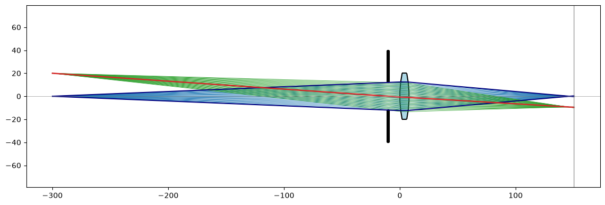
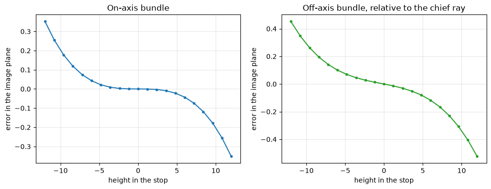

Ray tracing through a biconvex lens
The example is a biconvex lens of N-BK7 glass, the intersection of two discs. Rays are traced through it by finding where they meet its surfaces and bending them by Snell’s law. An aperture stop in front of the lens limits the light. The chief ray goes from an off-axis object point through the stop’s center, the marginal rays from the on-axis point to the stop’s edge, and the bundles fill the stop. Lengths are in mm.

[1]:
import math
import matplotlib.pyplot as plt
import planex as px
The lens
The lens has radii R1 = 100 and R2 = −100, a thickness of 8, a diameter of 40 and the index n_glass = 1.5168. The two discs are centered at C1 and C2, and a rectangle of the lens’s diameter cuts off its rim (Figure 1).
[3]:
n_glass = 1.5168
R1 = 100.0
R2 = -100.0
thickness = 8.0
C1 = (R1, 0.0)
C2 = (thickness + R2, 0.0)
front = px.QuickSketch().Circle(C1[0], C1[1], abs(R1)).Face()
back = px.QuickSketch().Circle(C2[0], C2[1], abs(R2)).Face()
rim = px.QuickSketch((-5, -20)).Rectangle(thickness + 10, 40).Face()
lens = (front * back * rim).faces[0]
print("lens area", round(lens.mass, 3))
lens area 266.342
The thick-lens formula gives the focal length and the principal planes:
[5]:
power = (n_glass - 1) * (1 / R1 - 1 / R2 + (n_glass - 1) * thickness / (n_glass * R1 * R2))
f = 1 / power
H1 = -f * (n_glass - 1) * thickness / (n_glass * R2)
H2 = thickness - f * (n_glass - 1) * thickness / (n_glass * R1)
print("focal length", round(f, 4), "principal planes at x =", round(H1, 4), "and", round(H2, 4))
focal length 98.086 principal planes at x = 2.6736 and 5.3264
Tracing
A ray is a long line from its start, and the lens’s first intersection with it is where it enters. The surface normal there points from the surface’s center. Snell’s law in vector form gives the new direction, and the next intersection along it is where the ray leaves.
[6]:
def unit(v):
length = math.hypot(*v)
return (v[0] / length, v[1] / length)
def refract(d, normal, n1, n2):
cos_i = -(d[0] * normal[0] + d[1] * normal[1])
eta = n1 / n2
cos_t = math.sqrt(1 - eta**2 * (1 - cos_i**2))
return unit((eta * d[0] + (eta * cos_i - cos_t) * normal[0], eta * d[1] + (eta * cos_i - cos_t) * normal[1]))
def beam(start, d):
return px.Line((start[0] + 1e-6 * d[0], start[1] + 1e-6 * d[1]), (start[0] + 1000 * d[0], start[1] + 1000 * d[1]))
def first_hit(start, d):
hits = [(v.x, v.y) for v in lens.Intersections(beam(start, d))]
return min(hits, key=lambda q: math.dist(q, start)) if hits else None
def trace(start, direction, end_x):
d = unit(direction)
entry = first_hit(start, d)
if entry is None or abs(math.dist(entry, C1) - abs(R1)) > 1e-6:
return None
d = refract(d, unit((entry[0] - C1[0], entry[1] - C1[1])), 1.0, n_glass)
leave = first_hit(entry, d)
if leave is None or abs(math.dist(leave, C2) - abs(R2)) > 1e-6:
return None
d = refract(d, unit((C2[0] - leave[0], C2[1] - leave[1])), n_glass, 1.0)
t = (end_x - leave[0]) / d[0]
return [start, entry, leave, (leave[0] + t * d[0], leave[1] + t * d[1])], d
def crosses_axis(path):
(x0, y0), (x1, y1) = path[-2], path[-1]
return x0 - y0 * (x1 - x0) / (y1 - y0)
Check
Check: a ray close and parallel to the axis, 0.01 above it, crosses the axis at the back focal point, f behind the second principal plane, and its height over its final slope is the focal length.
[7]:
path, d = trace((-50, 0.01), (1, 0), 200)
print("back focal point traced", round(crosses_axis(path), 6), "thick-lens formula", round(H2 + f, 6))
print("focal length from the ray", round(-0.01 / (d[1] / d[0]), 6), "formula", round(f, 6))
back focal point traced 103.41244 thick-lens formula 103.412442
focal length from the ray 98.086009 formula 98.08601
Chief ray, marginal rays and bundles
The object lies 300 in front of the lens, at object_x, with an on-axis point and one at a height of 20 off the axis. The stop of radius stop_r = 12 sits at stop_x, 10 in front of the lens. The paraxial image plane follows from the principal planes.
[8]:
object_x = -300.0
height = 20.0
stop_x = -10.0
stop_r = 12.0
s_object = H1 - object_x
s_image = 1 / (1 / f - 1 / s_object)
image_x = H2 + s_image
print("image plane at x =", round(image_x, 4), "magnification", round(-s_image / s_object, 4))
image plane at x = 150.4381 magnification -0.4794
through_stop traces a ray from an object point through a height in the stop. The bundles pass the stop at 21 heights each:
[9]:
def through_stop(point, y_stop):
return trace(point, (stop_x - point[0], y_stop - point[1]), image_x)
stop = px.QuickSketch((stop_x - 1, -40)).Rectangle(2, 80).Face()
stop = stop - px.QuickSketch((stop_x - 2, -stop_r)).Rectangle(4, 2 * stop_r).Face()
heights = [stop_r * (k / 10) for k in range(-10, 11)]
on_axis = [through_stop((object_x, 0.0), y) for y in heights]
off_axis = [through_stop((object_x, height), y) for y in heights]
chief = through_stop((object_x, height), 0.0)
Check: the chief ray lands close to the paraxial image height, off by the lens’s distortion:
[10]:
print("chief ray lands at", round(chief[0][-1][1], 4), "paraxial image height", round(-height * s_image / s_object, 4))
chief ray lands at -9.5791 paraxial image height -9.5887
The rays through the lens: the on-axis bundle in blue with its marginal rays dark, the off-axis bundle in green and the chief ray in red.

Aberrations
The ray fan plots where each ray of a bundle lands in the image plane against where it passed the stop. The S-shape of the on-axis fan is spherical aberration, and the curve of the off-axis fan is coma.

Which way round
Finally, a plano-convex lens of the same focal length sits in a parallel beam. With the curved side towards the beam, both surfaces share the bending, and the marginal rays focus much closer to the paraxial focus than with the flat side first. The lens is 6 thick, with the diameter of 40.
[13]:
def plano_convex(flipped, focal=100.0, t=6.0, D=40.0):
R = focal * (n_glass - 1)
center = (R if not flipped else t - R, 0.0)
curved = px.QuickSketch().Circle(center[0], 0, R).Face()
slab = px.QuickSketch((0, -D / 2)).Rectangle(t, D).Face()
return (curved * slab).faces[0], center, R
def trace_any(face, center, R, y, end_x=300.0):
d, start, points = (1.0, 0.0), (-50.0, y), [(-50.0, y)]
for step in range(2):
hit = min(((v.x, v.y) for v in face.Intersections(beam(start, d))), key=lambda q: math.dist(q, start))
on_curve = abs(math.dist(hit, center) - R) < 1e-6
normal = unit((hit[0] - center[0], hit[1] - center[1])) if on_curve else (-1.0, 0.0)
if normal[0] * d[0] + normal[1] * d[1] > 0:
normal = (-normal[0], -normal[1])
d = refract(d, normal, 1.0 if step == 0 else n_glass, n_glass if step == 0 else 1.0)
points.append(hit)
start = hit
t = (end_x - start[0]) / d[0]
points.append((start[0] + t * d[0], start[1] + t * d[1]))
return points
for flipped, label in ((False, "curved side to the beam"), (True, "flat side to the beam")):
face, center, R = plano_convex(flipped)
focus = [crosses_axis(trace_any(face, center, R, y)) for y in (0.05, 15.0)]
print(label, "paraxial focus", round(focus[0], 3), "rays at 15 focus", round(focus[0] - focus[1], 3), "shorter")
curved side to the beam paraxial focus 102.044 rays at 15 focus 2.505 shorter
flat side to the beam paraxial focus 106.0 rays at 15 focus 10.09 shorter